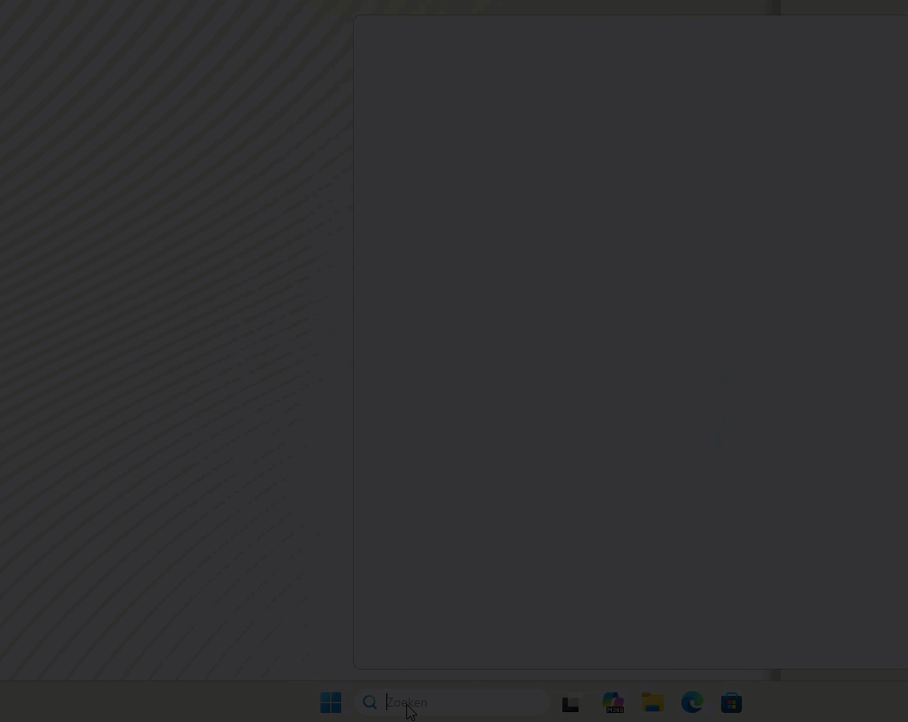
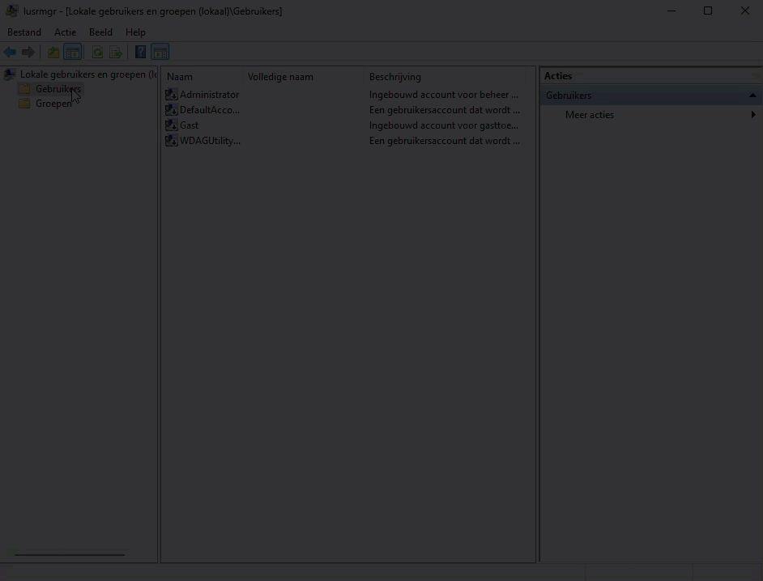
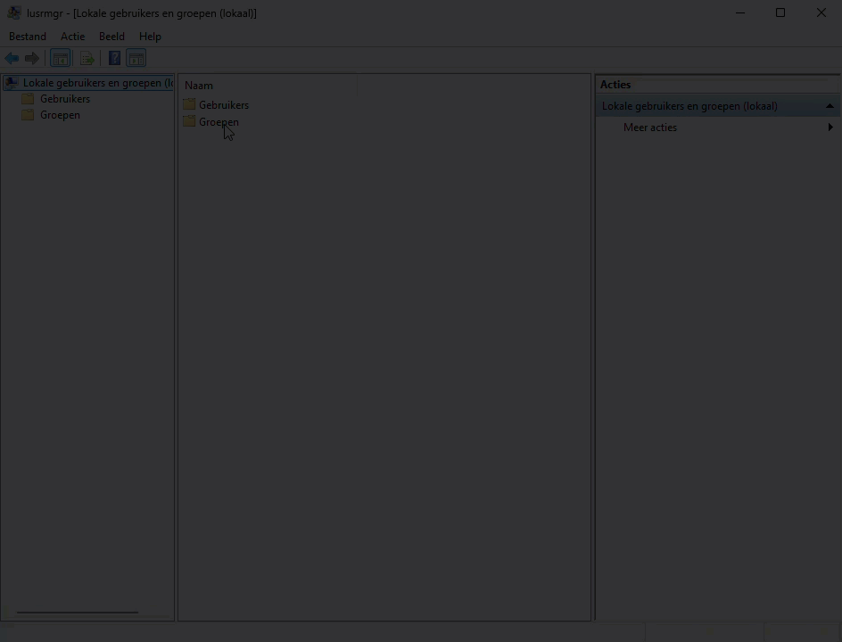

1. Microsoft Management Console: Users and groups
Het beheer van lokale gebruikers en groepen gebeurt via de snap-in "Local Users and Groups" in de Microsoft Management Console (MMC).
- Open het Windows Start Menu.
- Typ "lusrmgr.msc".
- Druk op Enter of selecteer "Local Users and Groups".

2. Gebruikers
2.1. Een lokale gebruiker toevoegen
Je kan als volgt een lokale gebruiker toevoegen:
- Zorg dat je op het tabblad Users staat.
- Klik met de rechtermuisknop en selecteer New User.
- Vul de gebruikersgegevens in: user name, full name, description en password.
- Klik op Create
- Klik op Close

2.2. Wachtwoorden resetten
Je kan als volgt het wachtwoord van een lokale gebruiker resetten:
- Klik met de rechtermuisknop op de gebruiker.
- Selecteer Set Password.
- Klik op Proceed.
- Geef twee keer het nieuwe wachtwoord in.
- Klik op OK.
2.3. Een gebruiker uitschakelen
Je kan een gebruiker uitschakelen. Daardoor kan die niet meer aanmelden op het systeem, maar de account wordt niet verwijderd.
- Dubbelklik op de gebruiker die je wil uitschakelen.
- Vink het selectievakje Account is disabled aan.
- Klik op OK.
2.4. Een gebruiker verwijderen
Je kan een gebruiker van het systeem verwijderen. Als je dat doet, kan je de gebruiker niet meer reactiveren; je moet de account helemaal opnieuw aanmaken.
- Klik met de rechtermuisknop op de gebruiker die je wil verwijderen.
- Selecteer Delete.
- Klik op Yes om te bevestigen.
3. Groepen
3.1. Een gebruiker aan een groep toevoegen
Door een gebruiker toe te voegen aan de groep Administrators, geef je hem lokale beheerdersrechten.
Je kan als volgt een lokale gebruiker toevoegen aan de groep Administrators:
- Zorg dat je op het tabblad Groups staat.
- Dubbelklik op de groep Administrators.
- Klik onderaan op de knop Add.
- Geef de volledige gebruikersnaam in van de gebruiker die je wil toevoegen.
- Klik op Check Names om te controleren.
- Klik op OK.
De gebruiker is nu toegevoegd aan de lokale groep Administrators. De volgende keer dat deze gebruiker zich op dit systeem aanmeldt, heeft hij beheerdersrechten.

3.2. Een gebruiker uit een groep verwijderen
Je kan een gebruiker op een gelijkaardige manier uit een groep verwijderen:
- Zorg dat je op het tabblad Groups staat.
- Dubbelklik op de groep Administrators.
- Selecteer de gebruiker die je wil verwijderen.
- Klik onderaan op de knop Remove.
- Klik op OK.
De gebruiker is nu verwijderd uit de lokale groep Administrators. De volgende keer dat deze gebruiker zich op dit systeem aanmeldt, heeft hij geen beheerdersrechten meer.